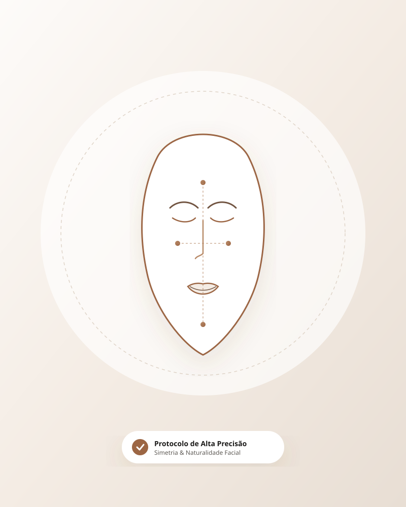

Harmonização Sutil
Preenchimento e alinhamento facial anatômico sem perder a naturalidade das suas expressões.
Consultar no WhatsApp →Protocolos clínicos personalizados, sem exageros e com rigor anatômico. Recupere o contorno, a sustentação e a vitalidade da sua pele.

Preenchimento e alinhamento facial anatômico sem perder a naturalidade das suas expressões.
Consultar no WhatsApp →Estímulo biológico profundo de colágeno contra flacidez, garantindo sustentação e viço duradouros.
Consultar no WhatsApp →Protocolos focados em definição mandibular, papada e melhora global da firmeza do terço inferior.
Consultar no WhatsApp →“O meu maior pavor era ficar com o rosto artificial. A Dra. teve uma sensibilidade ímpar: fiquei com ar descansado e jovem, sem ninguém notar intervenção.”
— Mariana S. (Harmonização Sutil)“Consultório impecável, atendimento pontual e clareza total no plano de aplicação do bioestimulador. A textura da pele mudou completamente.”
— Camila R. (Bioestimulador de Colágeno)“Segurança total do início ao pós. Não empurraram tratamentos que eu não precisava. Foi a melhor escolha médica que já fiz.”
— Patrícia F. (Protocolo Antiflacidez)Absolutamente não. Nossa conduta clínica prioriza a moderação e o respeito às proporções individuais. O objetivo é rejuvenescimento imperceptível.
Realizamos um mapeamento fotográfico e anamnese completa do seu histórico dérmico. Você receberá um diagnóstico objetivo com as reais necessidades da sua queixa.
Utilizamos anestésicos tópicos hospitalares e microcânulas de alta tecnologia, tornando a grande maioria dos procedimentos praticamente indolor.
Converse diretamente com nosso suporte e reserve seu horário no consultório.
Agendar pelo WhatsApp AgoraAtendimento em ambiente privativo com hora marcada.